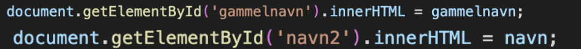

En database er i princippet opbygget som et excel sheet, hvor den øverste række beskriver hvad overskriften er. Ofte kalder man den første kollone den primære ID og så skal man give dem et unikt ID. Det er vigtigt at de er unikke, da man ikke kan have to ens ting i databasen. Det ville give problemer hvis man kaldte tingen med primID 1 og der så kom to forskellige ting op. Eksempelvis kunne man have en database over forskellige lamper til Andlight. Her har de alle et unikt primært ID, som består af bogstaver og tal. Når man har et produkt vil der også være beskrevet hvilket brand der har produceret den, størrelsen og farven. De tre egenskaber kaldes for attributter. Der er også forskellige relationer mellem entiterne og attributterne. For eksempel kan der være 1 til mange relationer (1-M), 1 til 1 relationer (1-1) eller mange til mange relationer (M-M).
Vi har lavet et spil, der bruger en database. I spillet skal man gætte om forskellige opfindelser kommer fra før eller efter andre opfindelser. Eksempelvis skal man gætte om flyvemaskinen blev opfundet før eller efter en lyspære. Koden tager udgangspunkt i et datasæt, der er sorteret efter hvornår de kommer fra. Så viser den to billeder af opfindelsen og så skal man gætte om den opfindelse til venstre kommer fra før eller efter opfindelsen til højre. Vi har valgt at lave to knapper der lyser op når man 'hover' over dem. Efter man har gættet vil billedet til venstre blive rykket til højre og der vil blive taget et nyt tilfældigt billede af en opfindelse.
Den ovenstående kode er en del af html delen, der skaber hjemmesiden. Måden det er blevet sat op, gør at hvis man henviser noget til ID'erne med henholdsvis 'counter', 'navn2' og 'gammelnavn', så vil det blive indsat der.
Ovenstående kode henviser det, som variablen gammelnavn og variablen navn har til ID'erne gammelnavn og navn2.
Tilbage til hovedsiden